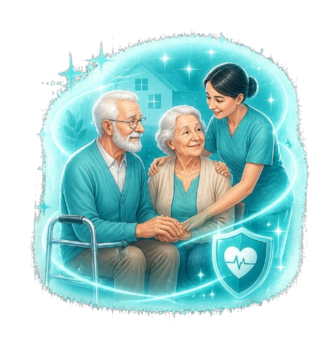

Compassionate healthcare services designed to support seniors with personalized medical attention, preventive care, and long-term wellness management.

Geriatric Care focuses on the physical, emotional, and medical well-being of older adults through specialized healthcare services tailored to aging-related conditions and lifestyle needs.
At Serenity Medical, we provide holistic senior care programs that prioritize comfort, dignity, mobility, and quality of life while ensuring continuous support for patients and families.
Our specialists evaluate mobility, nutrition, chronic conditions, medications, and daily wellness needs to create personalized care plans that help seniors live healthier and more independently.
Our services include:
Individual care plans designed around each senior’s unique health needs.
Early detection and management of age-related health concerns.
Guidance and assistance for caregivers and family members.
Wellness-focused programs that support healthy and independent living.
Common questions about geriatric and senior healthcare services.
Geriatric care focuses on the healthcare needs of older adults, including preventive care, chronic disease management, mobility support, and wellness planning.
Seniors experiencing mobility challenges, multiple health conditions, medication concerns, or age-related wellness issues can benefit greatly from geriatric care.
Yes — many geriatric programs include home care guidance, caregiver support, and wellness monitoring for improved comfort and safety.
Regular follow-ups are recommended to monitor overall health, medications, nutrition, and mobility while preventing complications.